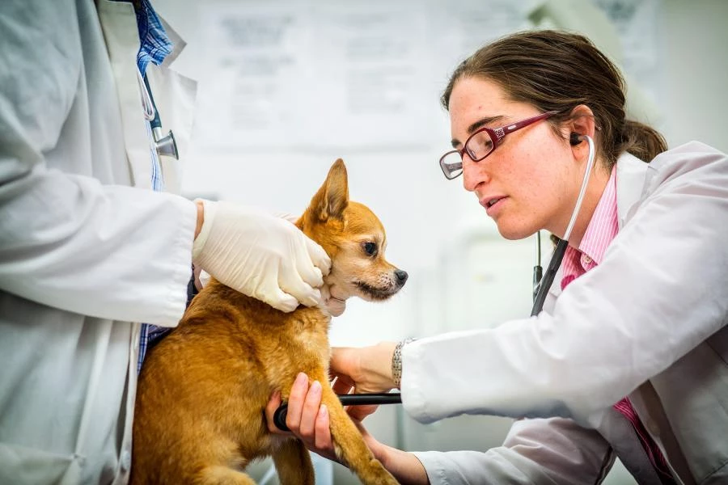

Blog - Consejos y Noticias
5 Consejos para el Cuidado de tu Mascota

Las mascotas son parte de nuestra familia, y su bienestar es esencial. Aquí te dejamos algunos consejos clave para mantener a tu mascota saludable y feliz. Primero, es fundamental proporcionar una alimentación balanceada y adecuada a su especie. Esto asegura que reciban todos los nutrientes necesarios para su crecimiento y salud.
Asegúrate de que siempre tenga acceso a agua fresca; la hidratación es crucial. Realiza chequeos veterinarios regulares, ya que pueden detectar problemas de salud antes de que se conviertan en serios. Además, ofrece ejercicio diario y tiempo de juego, lo que no solo mejora su condición física, sino también su bienestar mental. Finalmente, crea un ambiente seguro y cómodo en casa, libre de peligros que puedan poner en riesgo a tu mascota.
Vacunas Esenciales para tu Mascota

Las vacunas son vitales para proteger a tu mascota de enfermedades. Mantener su calendario de vacunación al día es uno de los aspectos más importantes de su cuidado. Las vacunas esenciales incluyen la de parvovirus y moquillo para perros, así como la de rabia, que es obligatoria para todos los animales en muchas áreas.
Además, para los gatos, es importante considerar la vacuna contra la leucemia felina. Consulta siempre con tu veterinario sobre qué vacunas son necesarias según la edad, el estilo de vida y la salud general de tu mascota. Recuerda que prevenir es mejor que curar.
¿Cómo Identificar Problemas Comunes de Salud?
Estar atento a cualquier cambio en el comportamiento o la apariencia de tu mascota es crucial. Algunos signos de problemas de salud pueden incluir pérdida de apetito, letargo o falta de energía, y cambios notables en el peso. También debes estar alerta a problemas de piel o pelaje, así como a cualquier dificultad para moverse o jugar.
Si notas alguno de estos síntomas, no dudes en contactar a tu veterinario. Un diagnóstico temprano puede marcar una gran diferencia en la salud de tu mascota. Recuerda que ellos dependen de nosotros para cuidar de ellos, y es nuestra responsabilidad asegurarnos de que estén felices y saludables.